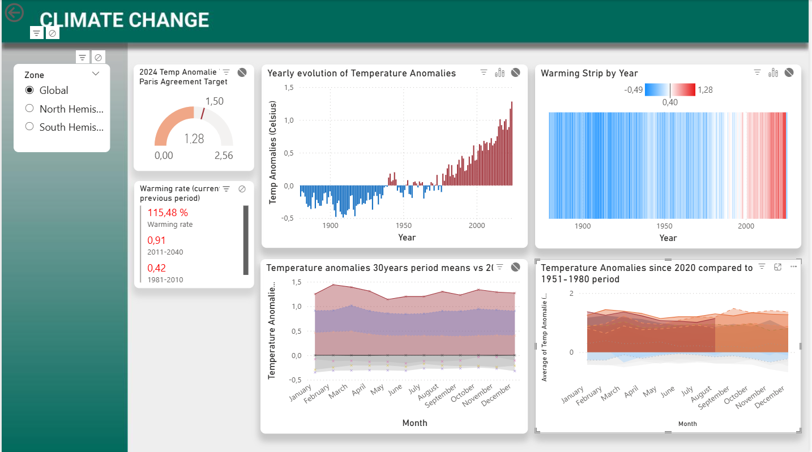

Capstone project, Data Analyst certification (Mines Paris) — built in Power BI.
Proyecto final, certificación Data Analyst (Mines Paris) — construido en Power BI.

GISTEMP Team, 2026: GISS Surface Temperature Analysis (GISTEMP), version 4. NASA Goddard Institute for Space Studies. Dataset accessed 2025-11-01 at https://data.giss.nasa.gov/gistemp/